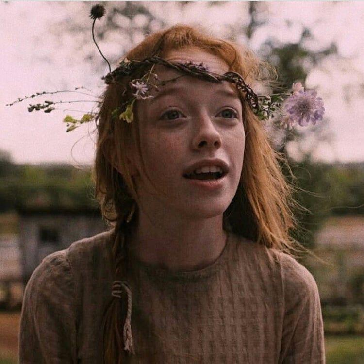
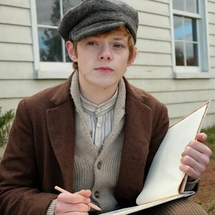
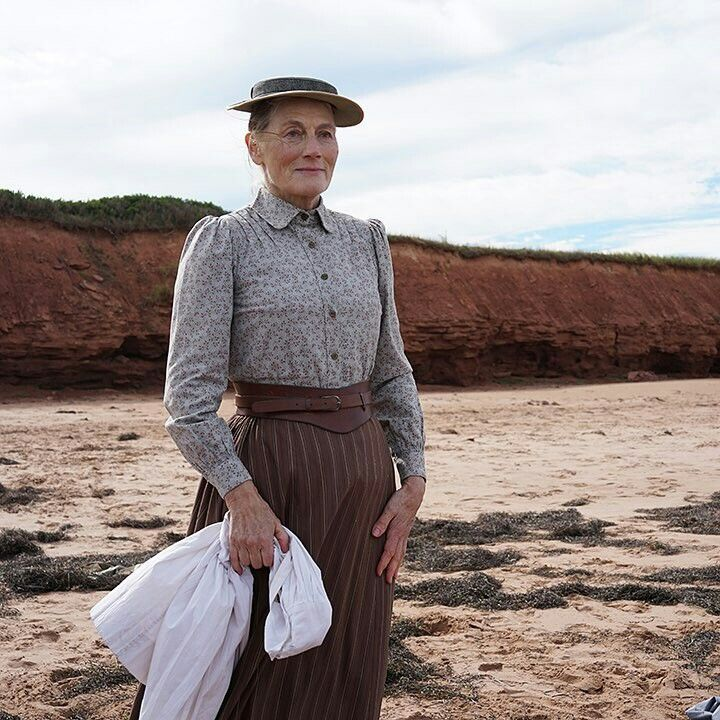
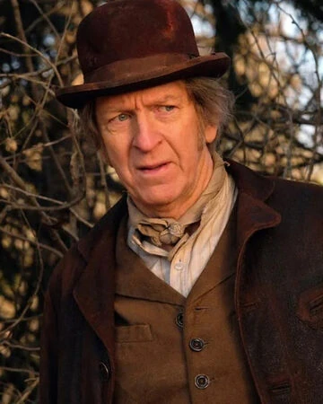
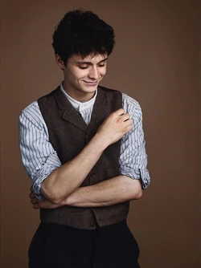

Resumen
En 1896, en la tranquila Isla del Príncipe Eduardo, los hermanos Cuthbert esperan un muchacho para su granja... pero reciben a Anne Shirley, una niña pelirroja, soñadora y marcada por un pasado de abandono. Aunque primero rechazada, Anne conquistará corazones con su imaginación feroz y su espíritu indomable. En un mundo que exige obediencia, ella desafiará las reglas con humor, sensibilidad y una sed de pertenencia. Entre errores, amistades y dolores que forjan el alma, Anne aprenderá que ser diferente puede ser su mayor fuerza. ¿Podrá esta niña de fuego interior arraigar su corazón inquieto en Avonlea, o el destino le robará de nuevo lo que más anhela?.
Mis personajes favoritos
Estos personajes tienen características o escenas que me han gustado mucho, convirtiendolos en mis favoritos de toda la serie y saga de libros.
-
Anne Shirley Cuthbert
Anne Shirley Cuthbert es el corazón de la serie: imaginativa, apasionada y con una sensibilidad que la lleva a cuestionar injusticias de género, clase y raza. Su autenticidad la convierte en un faro de cambio.
-
Cole Mackenzie
Cole Mackenzie, delicado y artístico, representa la lucha por la aceptación de la diferencia. Su camino muestra la importancia de la autoexpresión y de encontrar un lugar seguro donde florecer.
-
Marilla Cuthbert
Marilla Cuthbert es estricta y práctica, pero bajo esa fachada guarda un profundo amor. Su evolución es conmovedora: de mujer rígida a alguien que aprende a valorar la sensibilidad y la imaginación de Anne.
-
Matthew Cuthbert
Matthew Cuthbert, tímido y bondadoso, equilibra a Marilla con su ternura. Su relación con Anne resalta la belleza de la empatía silenciosa y del amor incondicional, mostrando que la fuerza también está en la suavidad.
-
Gilbert Blythe
Gilbert Blythe es inteligente y compasivo. Más allá de su rol como interés romántico, se convierte en un aliado para Anne, compartiendo su visión de un futuro más justo. Su carácter abierto lo hace puente entre tradición y progreso.
Relevancia
Anne with an E aborda una amplia gama de temas sociales a través de sus personajes y sus vivencias. La serie trata el feminismo desde Anne Shirley, cuya voz rebelde y soñadora desafía los roles de género impuestos en su época. Gilbert Blythe refleja la lucha por la igualdad de oportunidades, pues su amistad con Anne rompe estereotipos y muestra respeto mutuo. Cole Mackenzie representa la importancia de la diversidad y la aceptación, ya que su sensibilidad artística y orientación sexual lo enfrentan a la discriminación, pero también lo impulsan a buscar un entorno donde pueda ser él mismo. Marilla Cuthbert, rígida al inicio, encarna la dificultad y el valor de cambiar mentalidades en una sociedad tradicional, mientras que Matthew, con su bondad silenciosa, demuestra que la masculinidad también puede expresarse en la ternura. La serie además visibiliza el racismo y el colonialismo mediante personajes como Ka’kwet, una niña indígena, mostrando las injusticias hacia su comunidad. Así, cada intervención de los personajes no solo construye su crecimiento personal, sino que expone problemáticas universales aún vigentes, desde la lucha por la libertad de pensamiento hasta la búsqueda de justicia social, haciendo de la historia un espejo de transformación y resiliencia
Libros
La serie ha sido basada en la historia de Ana de las Tejas Verdes, una saga de 8 libros de la autora Lucy Maud Montgomery. En la siguiente tabla, estos libros han sido ordenados por la edad de Anne (Ana) en ellos.
| Orden | Título | Año de publicación |
|---|---|---|
| 1 | Ana, la de Tejas Verdes | 1908 |
| 2 | Ana, la de Avonlea | 1909 |
| 3 | Ana, la de la Isla | 1915 |
| 4 | Ana, la de Álamos Ventosos | 1936 |
| 5 | Ana y la Casa de sus Sueños | 1917 |
| 6 | Ana, la de Ingleside | 1919 |
| 7 | El valle del Arco Iris | 1921 |
| 8 | Rilla, la de Ingleside | 1939 |